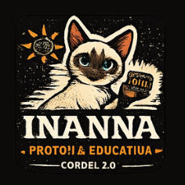
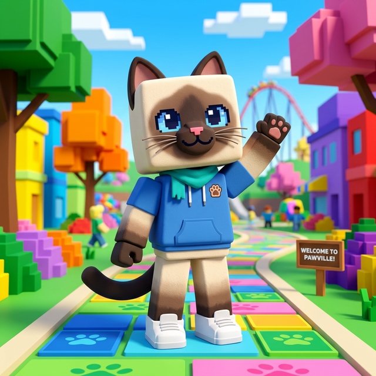
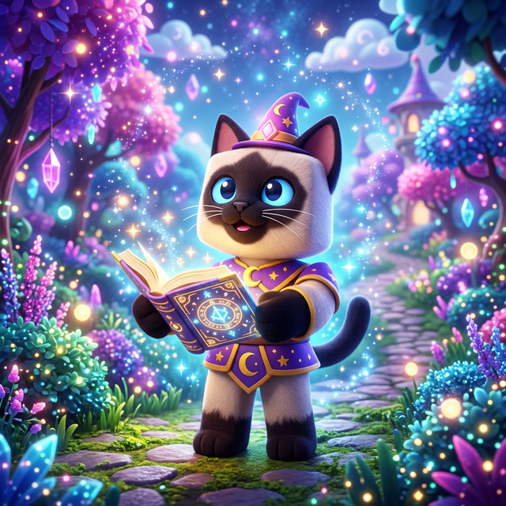
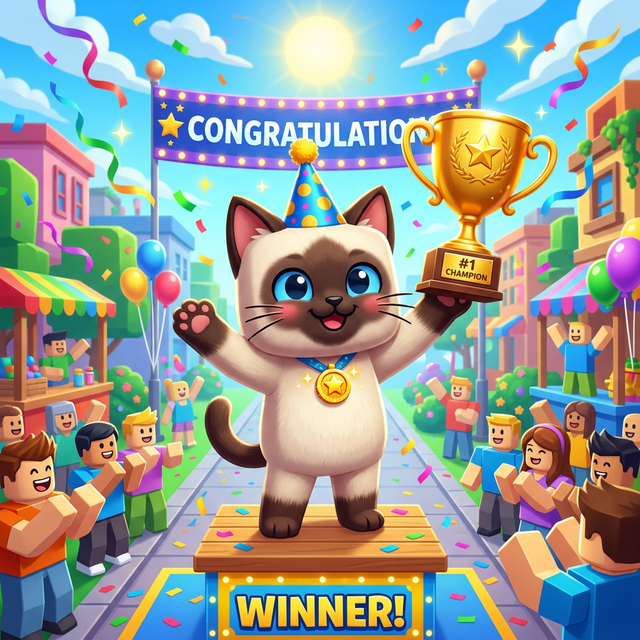

Inanna Proto-IA
Aprenda como a IA prevê palavras brincando com versos de Cordel e cultura popular brasileira.

👋 Bem-vindo ao Cordel 2.0
Identifique-se para começarmos a criar.
🎭 Escolha um Contexto
O sistema usará este tema para gerar as previsões, como um modelo de linguagem que aprende padrões de um corpus específico.
✍️ Escreva um Verso Incompleto
Tema selecionado: —
Use ___ (três underlines) para marcar onde a IA deve completar. Exemplo:
"No sertão eu vi uma ___" ou "A caatinga tem o estrondo do ___"
Use ___ para indicar a lacuna que a IA vai completar.

🤖 Previsões da Proto-IA
Escolha uma das previsões abaixo ou invente sua própria palavra para completar o verso.
🎯 Top 4 Opções da IA
📊 Por dentro do Algoritmo

Sua Quadra está pronta!
Você criou 4 versos com ajuda da Proto-IA. Veja como ficou: